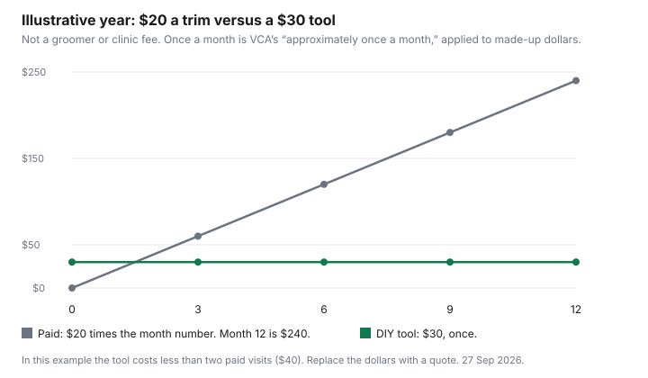

Pets · Canada
Nail Trims and Cat Grooming in Canada: DIY vs Paying

Doing your pet’s nail trims yourself in Canada usually costs less than paying: an illustrative $20 monthly visit is $240 a year, against a one-time $30 tool. VCA Canada says most dogs need a trim about once a month. Nail trims are the small fee that becomes a line item only when you multiply. A clinic or a groomer who charges for nails is selling a few minutes and a calm animal. Doing it yourself is a tool, a bit of practice, and a dog or cat that will let you hold a paw. This page is that choice for nails, and for the cat grooming that is not a dog haircut. The technique is from VCA Canada’s client page and from Cornell University College of Veterinary Medicine’s feline behaviour page, both as of 27 Sep 2026. No salon or clinic price is on those pages or cited elsewhere here, so the chart is a labelled example. The DIY dog-grooming guide covers baths and haircuts for dogs. This page does not repeat it. Education only. Not veterinary advice.
Key takeaways
- VCA Canada says most dogs need a trim about once a month, inactive dogs perhaps every three weeks, and that nails touching the floor are too long. No fee is on that page.
- Cornell’s feline page, updated March 2018, says to trim the hook and avoid the quick, the pink tissue in the nail. Cutting it bleeds and hurts. Nail caps, if used, are replaced every 6 to 12 weeks and only if the cat allows paw handling.
- An illustrative $20 visit once a month is $240 a year. An illustrative $30 tool stays $30. Those dollars are not from a salon or a clinic.
- No Canadian groomer, vet-tech, or mobile fee is listed here. Get three quotes. A matted coat is a reason to pay, not a reason to cut mats out at home.
- Dog haircuts in general are the DIY grooming guide. This page stays on nails and on cats.
When DIY works: tools and technique basics
DIY is a reasonable try when the animal already lets you handle paws, the nails are light enough to see or you are willing to take only the tip, and you have a styptic or a kitchen substitute before you start. VCA Canada’s nail page describes two clipper styles, guillotine and scissor, and says some people use a handheld file or grinder instead, which leaves a smoother end.
For light nails, VCA says the goal is to cut about 2 to 3 millimetres away from the quick. For dark nails, trim just the tip, then take 1 to 2 millimetres at a time. Stop at the curve of the nail or sooner if you meet the quick. A quick that has grown out because the nails were neglected will not allow a dramatic first trim. VCA also says a helper who keeps the dog still reduces the chance of a short cut.
For cats, Cornell’s page, which states it was updated March 2018, says to squeeze the paw gently so the nail extends, and to trim at an angle that removes the hook. The quick is the pink triangular tissue in the base of the nail, with blood vessels and nerve endings. Cutting it causes bleeding and pain. Nail caps are mentioned as an option only for cats that allow paw handling, replaced every 6 to 12 weeks. That page is about scratching furniture as a normal behaviour, not about a groomer’s price. If the cat will not be held, DIY is not the cheap option. It is the option that gets abandoned after one bad afternoon. The supply list puts the clipper in the later column on purpose.
When to pay: anxious pets, long-haired cats, matting
Pay when the animal is frightened, when you have already nicked a quick and everyone is done, or when the coat is the problem rather than the nail. A long-haired cat with mats is not a nail-trim question.
Mats pull the skin. Cutting them out with scissors at home is how cats get cut. That is a reason to book a groomer or a clinic, not a reason this page can price. VCA says vet clinics can offer sedation if a dog is very upset by nail trims. Sedation is a medical decision and a separate fee. Ask what it includes before you agree. This page does not list a sedation price.
Anxious does not mean “a little wiggly.” Wiggly is the helper and the tiny cuts. Anxious is a dog that pants, struggles, or will not take a treat, or a cat that cannot be touched. Forcing that animal so you can save a fee is how people get bitten and how animals get worse. The vet-bill guide is how to ask for an itemized estimate. Use it. A nail trim that prevents a nail from growing into the pad, which Cornell mentions as a reason to trim, is not the place to be brave and unskilled. Ask for a demonstration. VCA and Cornell both point at learning from the clinic.
Groomer vs vet tech vs mobile groomer
These are three quotes, not a ranking. A groomer is the salon path VCA names as an option for nails.
A vet clinic or a technician visit is the path that can add sedation and that already knows the animal. A mobile groomer comes to the house, which some anxious animals tolerate better and some fear because the van is new. This guide does not cite a provincial licence rule for mobile groomers or a fee for any of the three, so it describes no licence and prints no fee. Ask each what is included: nails only, a sanitary trim, a bath, a mat removal, and who is in the room. A nail-only visit is not a full groom. Do not compare a $ nail-only quote you receive with a full groom as if they were the same product.
The dog-grooming guide is where named salon information for dog haircuts was collected. Do not copy a haircut price onto a cat, and do not copy it onto a nail trim. Cats and nails are the gap that guide left. The dog cost sheet and the cat cost sheet do not print a grooming line. Leaving grooming off those PDFs is not a claim that it is free. Get the quote and add it beside the sheet.
Cost-per-year worksheet: DIY vs paying
Yearly paid cost is the price per visit times the number of visits. Yearly DIY cost is the tool, plus a replacement if you dull it, plus any styptic you buy, minus nothing for your time unless you want to write a time value yourself.
This page does not price your time. VCA’s frequency, “approximately once a month” for most dogs, and “every three weeks” as an example for inactive dogs, is the only frequency cited here. Cornell does not print a cat interval on its page, beyond replacing nail caps every 6 to 12 weeks if you use caps. Use the interval your clinic recommends for this animal once you have one.
Labelled example, not a quote: $20 a visit, once a month, is 20 × 12 = $240 a year. A $30 tool, once, is $30. Two paid visits are $40, which is already more than the tool in this example, so the example tool pays back on the second visit. One visit at $20 is still less than the tool. If your quote is $15 and you go four times a year, the year is $60, and a $30 tool is a different payback. Write your numbers in the blank row. The chart uses the $20 and $30 example so the lines have a shape. It is not a Canadian average.
| Path | Price | Times per year | Year |
|---|---|---|---|
| Illustrative paid trim | $20 a visit | 12 | $240 |
| Illustrative tool | $30 once | 1 | $30 |
| Your groomer or clinic quote | |||
| Your tool, styptic, and replacements |
Safety: quicks, bleeding and stress
The quick is living tissue. VCA says that if you cut it, apply a small amount of styptic powder, and if you do not have any, use flour or cornstarch.
Have that ready before the first nail, not after the blood appears. Cornell says cutting the quick bleeds and hurts. Stop the session. A nail that was only tipped should be a drop, not a crisis, if you followed the small-cut instruction. If bleeding does not stop, or the nail is torn rather than merely tipped, call a veterinarian. This page does not print a minute cutoff, because the two pages it relies on for technique do not give one number it is willing to turn into a rule. Do not put glue on a nail. That instruction is caution, not a product review. The emergency guide is for a visit that is actually an emergency. A single tipped nail that stops is not automatically that visit. A nail that will not stop bleeding is a call, not a forum.
Stress is the other injury. Short sessions, a treat the dog may have, and an end to the session while it is still tolerable, beat a heroic full set of nails. VCA says most dogs can learn to tolerate trims, and that starting in puppyhood helps. A cat that leaves is a cat you try again another day, or a cat you book. Punishment is not a method. Cornell’s behaviour page says punishment does not teach a cat that scratching was the problem. The same spirit applies to a nail trim that becomes a fight. The treat guide is how not to turn the training treats into an uncounted calorie pile, and which foods to keep out of the biscuit you use as a distraction.
Checklist
| Step | DIY | Paying |
|---|---|---|
| Can you handle the paws? | If no, do not start with all four feet. | Say so when you book. Ask about a short nail-only visit. |
| Styptic, flour, or cornstarch | In the room before the first cut. VCA names all three. | The salon should have its own. You do not need to supply it. |
| How much nail comes off | Tip only on dark nails. About 2 to 3 mm clear of a visible quick on light nails. | Ask them to take less if the quick is long. |
| Cat mats | Do not scissor mats off at home. | Book a groom or a clinic. Get the fee in writing. |
| After a bleed | Powder or flour, then stop. Call a vet if it does not stop. | Tell them if a nail was already torn. |

Sources
- VCA Canada Animal Hospitals, How to Trim a Dog’s Nails, as of 27 Sep 2026. About once a month for most dogs; about every three weeks as an example for inactive dogs; 2 to 3 mm from a visible quick; 1 to 2 mm cuts on dark nails; styptic powder, or flour or cornstarch; groomer or clinic, including sedation if the dog is very upset. No fee printed.
- Cornell University College of Veterinary Medicine, Feline Behavior Problems: Destructive Behavior, updated March 2018, as of 27 Sep 2026. Trim the hook; avoid the quick; nail caps every 6 to 12 weeks only if the cat allows handling.
- No groomer, mobile, or clinic nail fee was published as of 27 Sep 2026. The $20 and $30 figures are an example.
Frequently asked questions
How often should nails be trimmed?
VCA Canada’s client page says most dogs need a trim approximately once a month; dogs walked on pavement may go longer because the ground files the nail, and inactive dogs, or dogs that are never on a hard surface, may need trims more often, with every three weeks as that example. Nails that touch the ground, or that click on a hard floor, are too long on that page. Cornell’s cat page does not print a weekly interval; it says to trim the hook and, if you use nail caps, to replace them every 6 to 12 weeks. Ask your clinic for this animal.
Is it cheaper to trim my dog's nails myself?
It is cheaper when the tool and a few supplies cost less than the visits you would actually pay for, and when the dog will let you do it. No Canadian fee is listed here, so this page does not claim a national saving. In a labelled example, $20 once a month is $240 a year and a $30 tool is $30, so the tool costs less than two visits, while one $20 visit is still less than the tool. Write your quote in the worksheet; a dog that will not be handled does not make DIY the cheap path.
How much does cat grooming cost?
No cat grooming fee, nail fee, or mobile fee was published as of 27 Sep 2026, so none is printed. A nail trim and a mat removal are different jobs, so get a written quote that says which one you are buying. Mats are a reason to book someone, not a reason to cut them out with household scissors. The dog-grooming guide is haircuts for dogs, so do not copy a dog price onto a cat.
What if I cut the quick?
Stop, and apply a small amount of styptic powder, or flour or cornstarch if you have no styptic, which is what VCA says. Cornell says cutting the quick causes bleeding and pain, so have the powder or the flour in the room before you start. If the bleeding does not stop, or the nail is torn, call a veterinarian. This page does not set a number of minutes, because the pages it uses do not give one rule, and this is not veterinary advice.
Should I use a groomer or a vet?
Use whichever can do the job the animal will tolerate, after you compare quotes that describe the same work. VCA names a groomer as an option and says clinics can sedate a dog that is very upset; sedation is a separate decision and is not priced here. A mobile groomer is a third quote, and this guide does not cite a licence rule for mobile groomers. A nail-only visit is not a full groom: ask what is included, and ask the clinic for a demonstration if you want to try DIY later.
Researched and drafted with AI assistance and fact-checked against official Canadian sources. How we create content.
Disclosure: Amazon.ca storefront categories are an offer type. Saving Optimizer may earn a commission if we later add a partner link. There are no affiliate links on this page. Saving Optimizer is in the Amazon.ca Associates program, and some other guides link to Amazon.ca, but this one does not. Education only. This is not veterinary advice. A storefront link does not change the arithmetic.